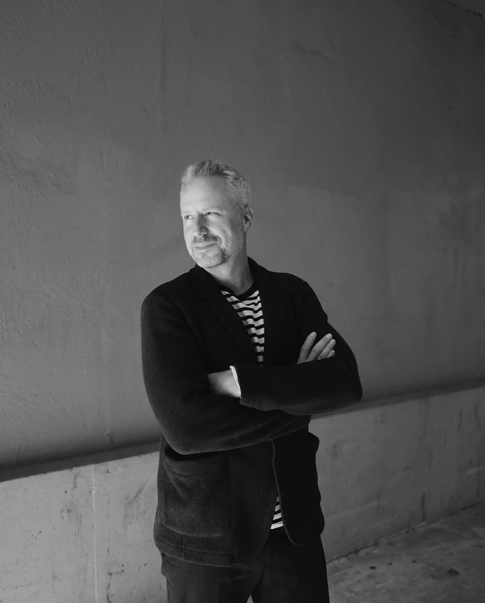
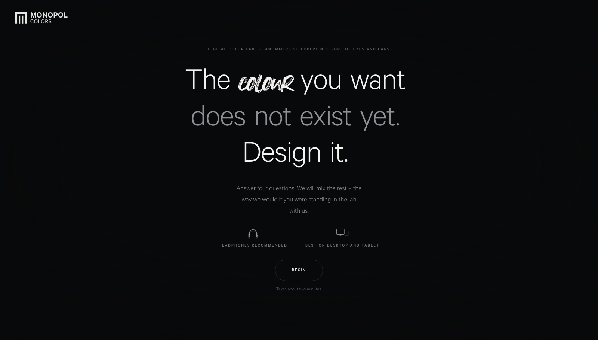
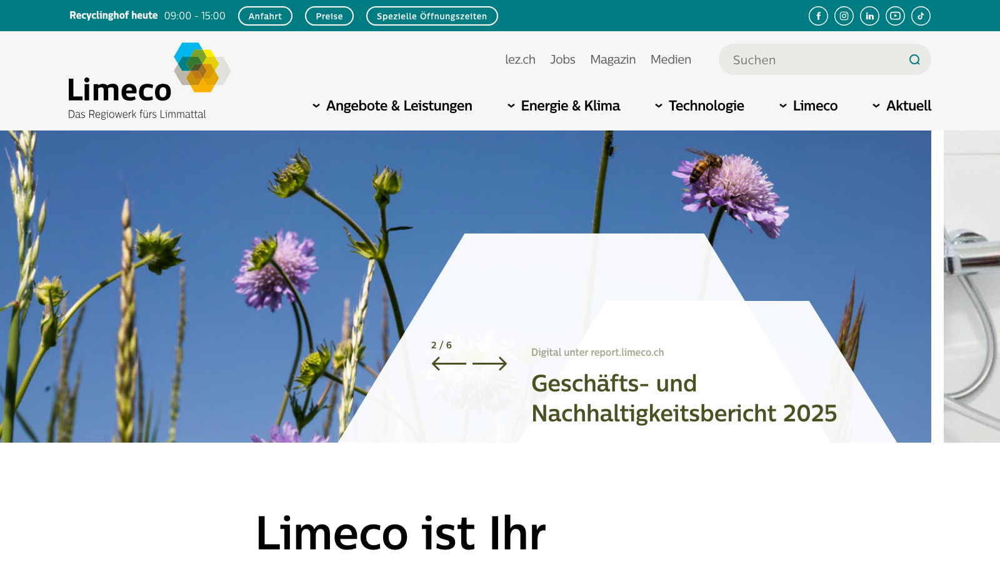
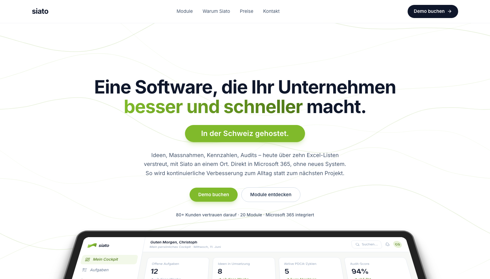
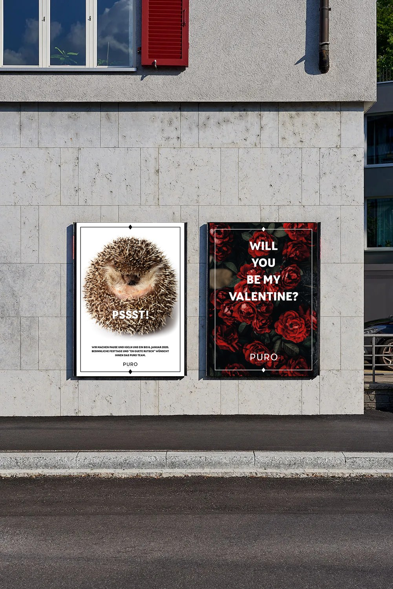
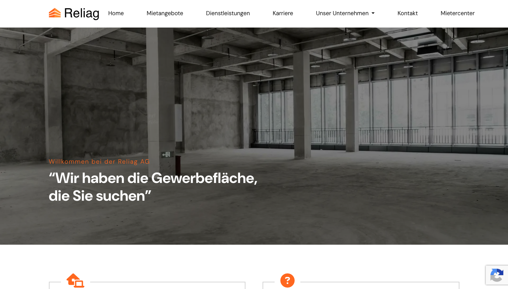
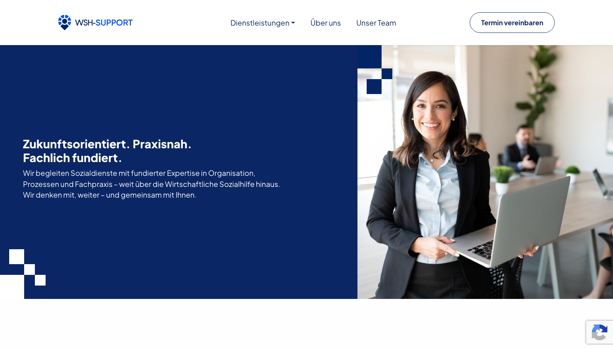
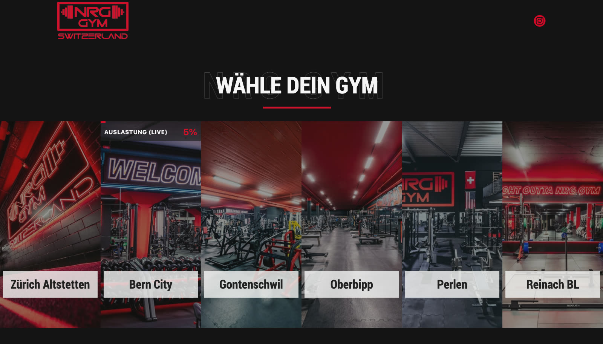
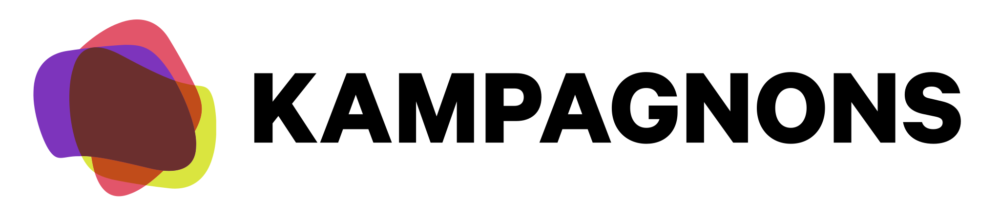

Menschlich hat es von der ersten Minute an gepasst. Geblieben ist uns aber etwas anderes: wie sehr euch euer eigenes Geschäft fasziniert. Das hört man nach zwei Sätzen. Uns fasziniert neben eurem Business auch die andere Seite davon: Naturspur so zu inszenieren, dass daraus eine Marke wird, die euer Unternehmen nach vorne bringt. Eine Marke, an der ihr Freude habt. Und wir auch. Auf den nächsten Seiten steht zusammengefasst, wer wir sind, wie wir arbeiten und welche Kunden wir schon begleiten durften.
So viel höher liegt die EBIT-Marge von Unternehmen mit starker Marke. Nicht weil sie billiger produzieren, sondern weil sie mehr verlangen können.
McKinsey, B2B-Markenstudie mit über 700 EinkaufsentscheidernSo viel schneller wächst der Umsatz bei Unternehmen, die im obersten Viertel für Marketing- und Vertriebsfähigkeiten liegen, verglichen mit dem Schnitt ihrer Branche.
McKinsey, Building marketing and sales capabilities to beat the marketSo viel profitabler arbeiten Teams, die wissen, wofür ihr Unternehmen steht und was das für ihre eigene Arbeit heisst. Verglichen mit Teams, in denen das niemand erklärt hat.
Gallup Q12-Metaanalyse, 183’806 Einheiten in 90 LändernAlles aus einer Hand.
Von zwei Leuten, die es können.
Unterstützt von KI. Damit breiter, besser und schneller.
Wenn ihr mit uns arbeitet, fühlt es sich an wie mit jemandem aus dem eigenen Haus. Auf dem Papier sind wir ein externer Dienstleister, im Alltag merkt ihr davon wenig: Wir hören zu, wir wollen euer Geschäft verstehen, und wir machen es euch einfach. Die KI hilft uns dabei, dort, wo sie etwas kann. Was von uns kommt, hat nie eine Maschine allein gebaut: Wir wissen, wie man sie führt, damit bessere Arbeit herauskommt.
Zehn Jahre Marketing und Kommunikation – drei Agenturen und eine grosse Versicherung. Angefangen hat er bei Daniel als Junior.

Macht seit fünfunddreissig Jahren Marketing und Kommunikation. Notorisch unzufrieden mit dem Status quo – und genau deshalb gut.
Unser Partner für Websites. Er übernimmt Technik, Umsetzung und Betrieb. Für euch bleibt es trotzdem eine Ansprechperson.
Bei Kampagnons: Mitarbeiterkommunikation, Projektleitung, Beratung. Parallel Produzent bei Smovie Film.
Consultant bei glaswerk: Inbound-Kampagnen und digitale Beratung für B2B und B2C.
Interne und externe Kommunikationsverantwortung für einen Bereich mit 1’000 Mitarbeitenden: Krisenkommunikation, Reputation, Medien, Content – und Kampagnen bis zu Kundenschreiben an über zwei Millionen Menschen.
BSc und MAS Business Communications an der HWZ, stets berufsbegleitend, beide mit Auszeichnung. Masterarbeit über künstliche Intelligenz in der Unternehmenskommunikation.
Folgt jetzt als frischgebackener Unternehmer dem, was ihn ohnehin nicht loslässt: KMU in Branding, Marketing und Kommunikation zu begleiten.
Redaktor bei der Lokalinfo AG, journalistische Gesamtverantwortung für die Stadtzürcher Wochenzeitung «Altstadt».
Partner bei Iguana Think Tank: Konzeption, Vermarktung und Organisation nationaler und internationaler Sportveranstaltungen.
Vollservice für Unternehmens- und Marketingkommunikation: Beratung, Konzept, Text, Projektmanagement.
Co-Gründer von Smovie Film und Smart Rebels; Dozent für Video- und Social-Media-Content an HWZ und ZHAW.
Dazu danielwagner.ch und Mitgründer von MAD/SAINTS.
Der Unterschied ist nicht, dass wir KI benutzen. Das tun inzwischen alle. Bei uns arbeitet ein ganzes Team spezialisierter Agenten: einer sucht die Idee, einer den Fehler, einer den Widerspruch. Wir als Experten sitzen mittendrin, kuratieren, verbessern und entscheiden. Trotz all dem: Das Handwerk bleibt entscheidend, denn die KI merkt nicht, wann sie danebenliegt. Und alles kann KI noch lange nicht.
Wir sind zwei kreative Vögel. Doch seit wir durchdacht mit KI arbeiten, wird aus jeder Idee ein ganzer Schwarm. Der Urknall ist und bleibt die Kreativität.
Links seht ihr, was vor zehn Jahren unser ganzes Universum war. Wir fanden es damals ziemlich gross. Heute fangen wir dort an, wo wir früher aufgehört haben. Nicht weil uns mehr einfällt, sondern weil wir bauen können, was uns einfällt.
Eine Mischung aus Arbeiten von Kampagnons und von webtie.
Für das Märlitheater haben wir die ganze Marke neu gestaltet und die Website lanciert. Pro bono, und für damalige Verhältnisse eine richtig schöne Sache.
Heute sieht die Seite leider nicht mehr aus wie damals. Der Kunde betreut sie seither selbst ;-)
maerli-theater.chZehn Jahre lang waren wir das Marketing- und Kommunikationsteam einer Farbenfabrik in Fislisbach: Monopol Colors. Die Marke war grau und blass, was für einen Farbenhersteller ein Problem ist. Wir haben ihr ein Gefühl gegeben und es «We live colors» genannt. Die Holi-Shootings waren die Idee, die Marke zu emotionalisieren, mit den Mitarbeitenden zusammen. Dazu kam alles Übrige: interne Kommunikation, Newsletter, Kampagnen. Die Website war für damalige Verhältnisse topmodern und richtig mutig.
Gefilmt und geschnitten hat Simon selbst. Aufgehört haben wir nur, weil er zur Helvetia ging.
monopol-colors.chEin digitales Farblabor für Architekten: vier Fragen, und am Ende steht eine Wunschfarbe für eine metallische Fassade, die es vorher nicht gab. Ein Prototyp, auch für Monopol Colors. Mit Klang, weil Farbe nicht nur die Augen angeht. Bestellt hat das der CEO eigentlich nicht. Wir haben es einfach gebaut, weil ein Konzeptpapier nie zeigt, was eine Idee kann, und weil solche Dinge mit KI heute in Tagen entstehen statt in Monaten. Voraussichtlicher Go-live: Dezember.
Kopfhörer empfohlen.
Selbst ausprobieren
Limeco ist das Regiowerk fürs Limmattal: Abfall verwerten, Abwasser reinigen, erneuerbare Energie produzieren. Wer eine Region nachhaltig entwickelt, muss das auch erklären können, sonst bleibt es eine Absichtserklärung. Für Limeco arbeiten wir seit über zehn Jahren in unterschiedlichen Konstellationen: strategische und politische Kommunikation, darunter die Abstimmung über den Projektierungskredit für das neue Energiezentrum, dazu Social Media, interne Kommunikation und Branding.
Die neuste Website hat eine andere Agentur entwickelt. Kampagnons hatte in dieser Zeit keine Ressourcen für grosse Webprojekte.
limeco.ch
Siato ist eine Software fürs Lean Management, und wir bauen ihren neuen Auftritt. Fertig ist er nicht: Wir stecken mitten in der Konzeption. Zeigen wollen wir ihn trotzdem, weil die Seite schon vorführt, was heute an Animationen möglich ist, ohne dass eine Website davon langsam wird.
Was ihr seht, ist der Stand von heute. Nächsten Monat steht dort etwas anderes.
Live ansehen
Puro war ein Restaurant am Zürcher Paradeplatz. Wir haben die Marke bespielt: Werbung, Content, Newsletter.
Das Restaurant gibt es nicht mehr.

Reliag vermittelt Gewerbeflächen im Kanton Aargau. Wer eine Halle mietet, unterschreibt für Jahre – die Seite muss deshalb zwei Dinge gleichzeitig leisten: Objekte zeigen und Vertrauen aufbauen.
reliag.ch
WSH-Support springt dort ein, wo Sozialdienste unter Druck stehen: Fachleute auf Zeit, ab dem ersten Tag. Ein Angebot, das man erklären muss, bevor jemand zum Hörer greift.
wsh-support.ch
NRG GYM betreibt Fitnessstudios im amerikanischen Stil, rund um die Uhr offen, an sechs Standorten von Zürich bis Reinach. Die Seite zeigt für jedes Studio die Auslastung in Echtzeit. Wer um elf Uhr abends noch hin will, weiss vorher, ob eine Bank frei ist.
nrggym.ch
Zusammen 16’500 CHF.
Kampagnons ist (noch) nicht mehrwertsteuerpflichtig. Jede Position im Detail steht in der Offerte.
Wenn ihr euch für Kampagnons entscheidet, bekommt ihr Kreativität, die sich etwas traut, Herzblut für eure Sache und Können in beidem: Branding und Technik.

